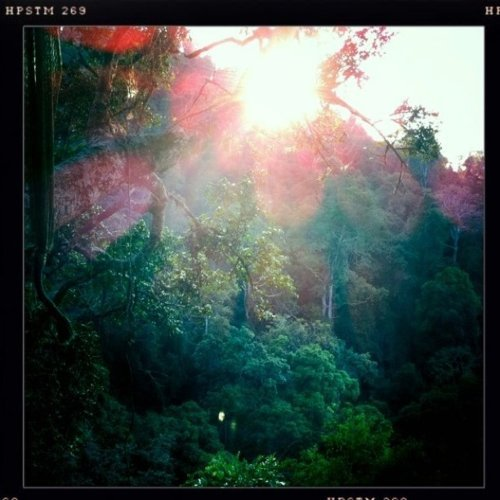

Sat, 26 Feb 2011 17:39:00 · Laos · jungletrek · adventure · photography
sunrise in the jungle in northern laos as seen

Sunrise in the jungle in Northern Laos as seen from the tree house where I was staying… http://instagr.am/p/B2KFi/
Sat, 26 Feb 2011 17:39:00 · Laos · jungletrek · adventure · photography

Sunrise in the jungle in Northern Laos as seen from the tree house where I was staying… http://instagr.am/p/B2KFi/